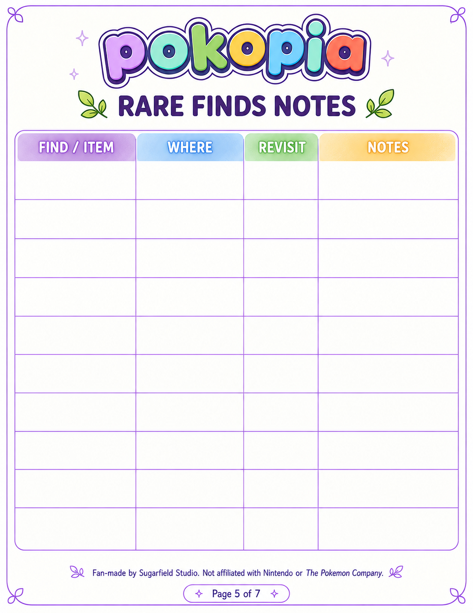

Start with a focus
Choose a useful direction for the session before the map gets busy.
PROPOSED DESIGN — NOT DEPLOYED · 1440PX REVIEW
FREE 7-PAGE POKOPIA PRINTABLE
Plan your next Pokopia session with a simple printable guide for goals, daily priorities, island ideas, and rare finds.


A SIMPLE PLACE TO BEGIN
Choose a useful direction for the session before the map gets busy.
Keep daily priorities in one practical, printable place.
Make room for island sketches and rare-finds notes as you play.
A REAL FIVE-PAGE PREVIEW
The pack contains seven pages. These are the five approved preview pages currently available for customer-facing display.
Quick Start Dashboard — set your session focus.
Mini Daily Reset — keep priorities close.

Rare Finds Notes — save discoveries.
HOW ACCESS WORKS
Use the form above to claim the free Quick Start Pack.
Your claim starts the secure Quick Start access flow.
Access the US Letter or A4 PDF when your access is available.

FOR YOUR NEXT SESSION
READY WHEN YOU ARE
Claim the free seven-page printable pack. US Letter and A4 formats are included.
GET MY FREE QUICK STARTReturns you to the original signup form and places focus in the email field.